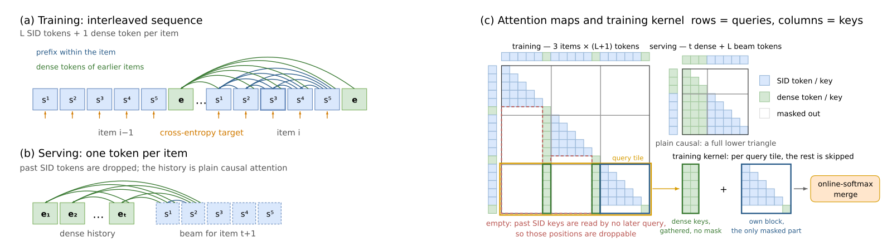
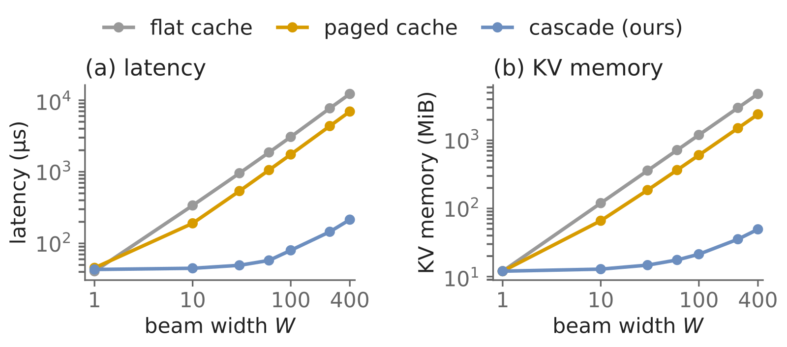

SHARE
Generative retrieval encodes each item as a multi-level Semantic ID (SID) and generates it level by level, the way a language model writes tokens. The upside is that production no longer needs a vector search index, and a new item can be retrieved as soon as it has an ID. The cost is on the input side: every history item takes 5 tokens, so a context of the same length holds only a fifth of the history. Pinterest's PinGER interleaves each item's SID with one dense-vector token during training and uses an asymmetric attention mask so that later positions read only the dense tokens. At serving it can therefore drop every SID from the history and spend one token per item, while the model computes exactly the same result. Offline, it reaches with 170 tokens the recall TIGER needs 1,024 tokens for. After replacing the production vector retriever PinRec on Related Pins, saves rose 0.62%, and saves of Pins published in the last 28 days rose 3.60%.
Teams working on generative retrieval should read this paper, because it solves the biggest input-cost problem of the SID approach cleanly: not by approximate compression, but by proving the model computes the same function before and after these tokens are dropped. Three engineering pieces can also be borrowed on their own: a beam diversity penalty that grows with shared-prefix depth, cascade attention that lets all beams share one copy of the history, and a trie of valid IDs kept on the GPU. It is also the first head-to-head online comparison of vector retrieval and SID retrieval. Two cautions apply. The online swap changes many things at once, so the mask's own contribution cannot be isolated. And the diversity penalty sharply lowers offline recall yet does better online, so this parameter cannot be tuned on offline Recall alone.
What problem is it solving?
Generative retrieval can represent items in two ways.
| Approach | Example | Input | Output | Main cost |
|---|---|---|---|---|
| Vector generation | PinRec | 1 dense vector per item | Predicts a vector, then looks up nearest neighbors in a vector index | Production still runs a vector search service |
| SID generation | TIGER | L SID tokens per item | Generates the SID level by level and maps it straight to items | Input length is L times the number of items |
A small example shows the input cost (illustrative). A user recently saved 3 Pins: a Scandinavian living room, a floor lamp and a wool rug. Each Pin's SID has 5 levels; the living room might be (12, 7, 301, 88, 5).
| Approach | Input tokens for the 3 history items |
|---|---|
| TIGER | 15, with 5 SIDs per item |
| PinGER in training | 18, with 5 SIDs plus 1 dense token per item |
| PinGER at serving | 3, keeping only each item's dense token |
History length really does matter. When the training context grows from 1,024 to 6,144 tokens, Recall@100 rises about 10% for both TIGER and PinGER, and neither has saturated. So spending fewer tokens per item means the same serving cost can see a longer history.
Pipeline overview
| Stage | What it does |
|---|---|
| IDs | The Pin's image-and-text content vector PinCLIP is quantized by an RQ-VAE into a 5-level SID with 2048 codes per level. Training adds a distillation term: within a batch of Pins, OmniSage, an engagement-based graph embedding, gives each Pin a similarity distribution over the other Pins, and the quantized representation must reproduce that distribution. The input is the content vector alone, so SIDs do not change when OmniSage is updated |
| Sequence model | A single decoder-only Transformer. In training, SID and dense tokens are interleaved and an asymmetric mask controls who can see whom |
| Goal conditioning | The desired action, the surface and the request time are concatenated into a goal vector that feeds the prediction head at every SID level |
| Decoding | Beam search with a prefix diversity penalty, plus a trie that keeps every step on IDs that actually exist |
| Serving | Cascade attention lets all beams share one copy of the history; generated SIDs are resolved to items through an in-memory index on the host |
| Post-training | DPO. Serving logs store the score the production ranker gave each shown item at request time; within one slate, items are sorted by that score and the top three are paired as preferred against the bottom three, with no separate reward model |
The core design: an asymmetric mask
In the training sequence, each history item contributes its SID tokens followed by one dense token. Attention is allowed by three rules only:
- A dense token sees only earlier dense tokens and never any SID.
- The level-ℓ SID token of an item may see the dense tokens of all earlier items and the shallower SIDs of its own item.
- Nothing else. An SID token sees neither other items' SIDs nor its own item's dense token, because at serving the next item's vector is exactly what is unknown.
Walk through it with the three Pins above. To predict the level-2 code of item 3, the model can see the dense tokens of items 1 and 2 plus the level-1 code of item 3. The SID tokens of items 1 and 2 are not used here. Rules 1 and 3 together guarantee that an item's SIDs are read only by its own deeper SIDs and never by any position belonging to another item. At serving, the history items' SIDs are deleted as whole groups, so the positions that read them are deleted with them, and the remaining dense hidden states do not change. Positional encoding is unaffected too, because all tokens of one item share one position index, which counts items rather than tokens. So the probability distribution of the next code is exactly the same as in training.
An analogy: before the backbone, each item gets an index card (the dense token, into which SID fusion has already folded its codes). Inside the backbone, an index card reads only earlier index cards; the SID positions are sticky notes beside it that read index cards and the item's own shallower notes, and nothing ever reads a note back. Tearing off every history item's notes at serving time therefore changes nothing computed on the cards.

The design also keeps the supervision signal of the SID approach. Every SID token is a prediction target, so one forward pass yields "number of history items × L" labels. A "dense encoder plus SID decoder" structure would supervise only one target item per forward pass.
The training-side cost is a longer sequence. Off-the-shelf FlexAttention can only skip blocks that are fully masked, and under this mask every block below the diagonal contains part of a dense column, so not one block is skipped. The authors wrote their own forward and backward kernels. The kernel cuts the sequence into query tiles, each holding whole items. Every row in a tile reads the dense tokens of all items before the tile, the same set for every row, so the kernel gathers that set and runs unmasked attention over it. What remains is attention among the tile's own tokens. Later items in the tile read the dense tokens of earlier items in the tile, and each SID position reads the shallower codes of its own item that are already given, which is rule 2 above (predicting the level-3 code, it reads the item's levels 1 and 2). Only this part needs the mask, and it is computed separately. Online softmax then merges the two partial results into exactly what one softmax over all keys would give. By the paper's appendix estimate, attention compute is about L²/(L+1) times lower than TIGER's, roughly 4 times at L=5. The level-5 SID token is also dropped from the training input: the token right after it is the dense token, which is never a prediction target, and no later position reads it. Prediction is next-token style: the level-1 code is predicted at the previous item's dense position and level ℓ at the item's level ℓ−1 position, so the level-5 code is still a target, predicted from the level-4 position, and SID fusion is a separate attention layer before the backbone that still reads all five code vectors of the item. Each item then takes 5 tokens with every target kept. Together the two changes raise training throughput 94% above TIGER at the same context length. Hoot says

- block has visible cells: computed
- fully masked: the only skippable kind
Every block below the diagonal is crossed by a dense column (the dark stripes), so none can be skipped and the cost equals full causal attention.
- rows of other tiles
- ① before the tile: every row reads the same dense tokens, gathered, no mask
- ② inside the tile: the only masked part
In ①, the past items' SID columns are empty: an item's SIDs are read only by its own deeper SIDs.
- dense token (key) visible
- SID token (key) visible
- masked
- How ① and ② merge (illustrative numbers): say part ①'s keys have exp-score sum Z₁=3 and weighted output o₁=0.2, part ② has Z₂=1 and o₂=0.8. The merge weights each part by its own denominator: (3×0.2+1×0.8)/(3+1)=0.35, exactly one softmax over all keys; simply averaging the two gives 0.5, which is wrong. Online softmax only keeps each part's denominator (and max score), never the full attention matrix.
Rows are queries, columns are keys. Illustrative: 4 items, each with 2 code levels plus 1 dense token (the paper uses L=5); the block size of 4 is illustrative too. The paper then also drops the deepest SID token from the training input, not drawn here. Source: paper §3.3.2 three mask rules; §3.3.4 sparsity-aware kernels (FlexAttention skips only fully masked blocks; query tiles hold whole items, earlier dense tokens unmasked + the tile's own block masked, merged by online softmax); Figure 2(c)
Offline results: higher recall at the same serving cost
| Setting | Model | Training context | Tokens read at serving | Recall@100 |
|---|---|---|---|---|
| Same serving cost | PinRec | 1,024 | 1,024 | 1.01% |
| TIGER | 1,024 | 1,024 | 3.65% | |
| PinGER | 6,144 | 1,024 | 4.00% | |
| Same recall | PinGER | 1,024 | 170 | 3.64% |
At the same serving cost, PinGER can train on a much longer history, so its recall is 9.5% higher than TIGER's and 3.9 times that of the vector retriever PinRec. Conversely, to match TIGER's recall it needs to read only 170 tokens. The first case means better results for the same money; the second means the same results while saving five sixths of the input.
The most important ablation is SID fusion, which folds the item's own per-level SID vectors into its dense token with one attention layer. Removing it lowers Recall@100 by 27%, because the dense token is the only channel through which later positions learn about this item, and without the discrete code the model loses a stable item identity. Removing goal conditioning costs 17%. The dense token's item features concatenate two pretrained vectors, the content vector PinCLIP and the engagement-graph vector OmniSage. Removing PinCLIP from these features (the SIDs are still produced from PinCLIP) has almost no effect, because the SIDs were quantized from PinCLIP in the first place and SID fusion already carries that information into the dense token, and removing OmniSage costs only 1.2%.
Why the beam needs a diversity penalty
Beam scores accumulate across levels, so the top W continuations of one strong prefix often outscore the best continuation of any other prefix. As a result, 100 beams span only 11.9 distinct level-1 codes, and the candidates crowd into a few content directions. The usual remedy is temperature sampling, but the paper finds it loses on both counts. Sampling changes the selection but not the scoring, so beams that sneak in by luck are eliminated at the next level, and the final level generates many IDs that do not exist. At T=1.5, distinct level-1 codes actually fall to 3.5, and only 13% of the top 10 IDs match real items.
PinGER instead picks beams one at a time. Each time it picks one, it adds a penalty to the other candidates that share a prefix with it, and the deeper the shared prefix, the larger the penalty. An illustration: three parent prefixes A=(12, 7), B=(12, 9) and C=(40, 3) have similar scores. After one beam is taken from A, B shares the first level with A and is penalized λ×1, while C is not penalized because it shares nothing with A. A's own second-best candidate also competes, but it shares the full prefix with the beam just taken, so it is penalized most (λ×2). The three are compared after penalties: C wins the next pick if it scores less than λ below B and still beats A's penalized next candidate.
| Decoding | Recall@100 | Distinct level-1 codes | Valid share of top 10 IDs |
|---|---|---|---|
| No penalty (top 100 by score) | 4.00% | 11.9 | 74.3% |
| λ=1.0 | 2.07% | 68.3 | 73.4% |
| λ=3.0 | 1.42% | 93.6 | 72.3% |
| Temperature T=1.5 | 0.60% | 3.5 | 13.2% |
Offline recall drops noticeably, because the held-out next interaction usually sits in the few most probable subtrees, and spreading the beam trades the hit rate on this one target for coverage of the user's other interests. The online choice goes the other way. On Related Pins, the λ=3.0 arm raised saves significantly, while the λ=1.0 arm showed no significant change in saves. On notifications, λ=1.0 did better: λ=3.0 gave a smaller click gain and more unsubscribes. So this parameter has to be tuned online per surface, and offline Recall only indicates direction.
Making wide beams affordable: three serving pieces
The first is cascade attention. All beams of a request share a history of about a thousand tokens and differ only in the few codes generated so far for the current item. The usual approach has every beam read the whole history, so cost grows linearly with beam width. PinGER stacks all beams of a request as one batch of queries over the shared history, so each request reads its history once, each beam then looks at its own short suffix, and the two results are merged exactly.

At beam width 10 it is 4.25 times faster than paged attention, and at width 400 it is 32 times faster; at width 30 it holds 12.6 times less KV memory. Wide beams thus move from an experimental setting to one that can ship.
The second is constrained decoding. Without a constraint, only about 66% of generated IDs match a real item at level 5, and the rest must fall back to a coarser prefix. The index is then queried with the first 4 or even 3 levels and items are taken from that wider neighborhood, which wastes the model's choice at the last levels. The authors keep the trie of valid prefixes on the GPU in compressed sparse row form, so each step is one batched lookup with no trip back to the CPU, and the cost is small: at beam width 100 each decode takes only 0.30 ms longer.
The third is the host-local index. The ID-to-item map is rebuilt daily and memory-mapped read-only, so all replicas on a host share one copy, and it replaces the remote vector search call. End to end, PinRec's p50 latency is 79 ms, while PinGER at beam width 60 is 51 ms. Most of the saving comes from removing the remote search call, which takes 31 ms at p99.
Online results
A two-week A/B on Related Pins compared against PinRec at the same candidate budget, with all metrics significant at the 5% level:
| Scope | Metric | Change |
|---|---|---|
| This surface | Saves | +0.62% |
| This surface | Grid clicks | +0.94% |
| Site-wide | Saves | +0.61% |
| Fresh content | Saves of Pins published in the last 28 days | +3.60% |
| System | End-to-end latency | -0.7% |
Fresh content gains the most because of how the IDs are built: SIDs come from content vectors, so a new Pin gets an ID and becomes retrievable as soon as it is published, whereas the engagement vectors PinRec depends on take weeks to stabilize. In the segment analysis, the Pins with the fewest saves over the prior seven days took a 20% larger share of candidates and had a 13% higher save rate. Previously undervalued content got exposure, partly breaking the loop in which popular items get recommended ever more. DPO post-training raised offline recall by another 2.3% and raised the share of candidates that make it into the final slate online by 10%.
Limitations as I see them
First, the online comparison is of the whole system, not the mask itself. Moving from PinRec to PinGER changes the output form, the ID source, the decoding and the retrieval service all at once. The paper does not separate how much of the 0.62% save gain comes from the interleaved mask allowing a longer history and how much from content-derived IDs favoring new Pins. The mask's direct benefit has only offline evidence: 6 times fewer serving tokens at the same recall.
Second, the diversity penalty is expensive offline. At λ=3.0, Recall@100 falls from 4.00% to 1.42%, a drop of about 64%, yet this setting was the better one online, while notifications preferred λ=1.0. Other teams cannot pick the parameter from offline experiments and will need an online test for every surface.
Third, scale and memory need to be checked for your own case. The backbone has only 4 layers and a hidden size of 768; with a larger model, the relative gains of cascade attention and constrained decoding may differ. The trie takes 1,368 MiB of GPU memory at 100 million items, and the ID-to-item index is roughly another 10 times larger. Businesses with bigger catalogs or more frequent updates should re-assess the cost of rebuilding the index daily.
How a recommendation or search team could try it
- First confirm that history length is the bottleneck: double the context of the existing SID retriever in number of items and see whether recall keeps rising. If it does not, compressing the input has limited value.
- Change the sequence layout of the existing SID model: add one dense token after each item, write the mask by the three rules, and first verify with a standard attention implementation that outputs are identical before and after dropping the history SIDs. Only then consider a custom kernel.
- Make sure each item's dense token folds in its own SID vectors; this step had the largest effect in the paper's ablations.
- In decoding, add the trie constraint first and measure the valid share of generated IDs. Then add the prefix diversity penalty, and take two or three values of λ straight to small online tests rather than relying on offline recall.
- If beam width is limited by memory or latency, bring in cascade attention over the shared history and move the ID-to-item lookup into host memory.
Bottom line
The idea most worth borrowing is a mask that lets training see more and serving read less while both compute the same function. It gives SID retrieval the input cost of vector retrieval without giving up the supervision signal.
| Dimension | Assessment |
|---|---|
| Problem importance | High. The input cost of SID retrieval directly limits usable history length and is one of the main obstacles to deploying this approach |
| Method novelty | Medium-high. Interleaving is not new, but the combination of an asymmetric mask that guarantees exact equivalence at serving, a beam penalty by prefix depth, and cascade decoding is |
| Experimental evidence | Medium-high. Offline comparisons, ablations, online A/B tests on two surfaces and segment analysis; the weakness is that online gains cannot be attributed to individual components |
| Engineering cost | High. Requires custom attention kernels, a GPU trie, a host-local index and a wide-beam serving stack |
| Worth trying? | Yes, especially for teams with an existing SID retriever limited by context length. The mask change can be done on its own first, with serving optimizations added as needed |
How did this read for you?
Hoot made a note. Thanks for the feedback.
One tap, no sign-in; tap again to undo. Only anonymous counts are kept, never who you are.
Discussion
Add experiment details, reproduction notes or a different take. Requires a GitHub sign-in.
Loading the discussion…